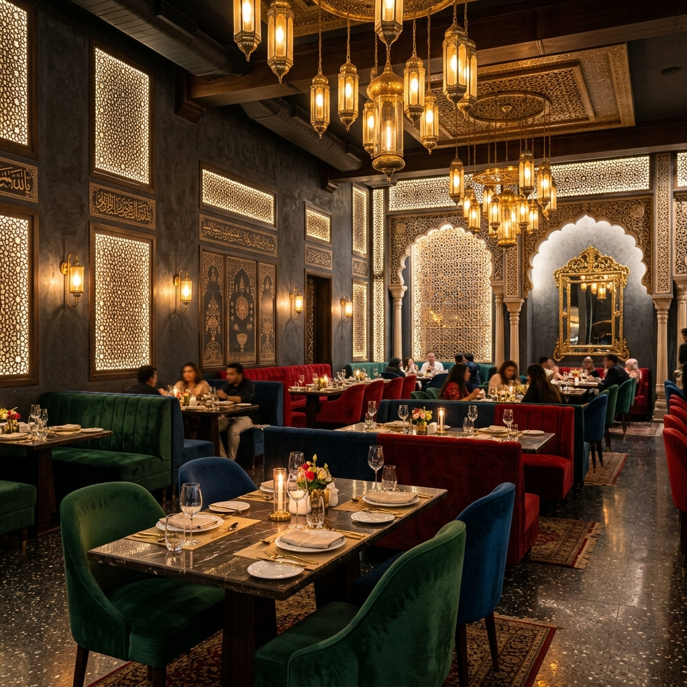
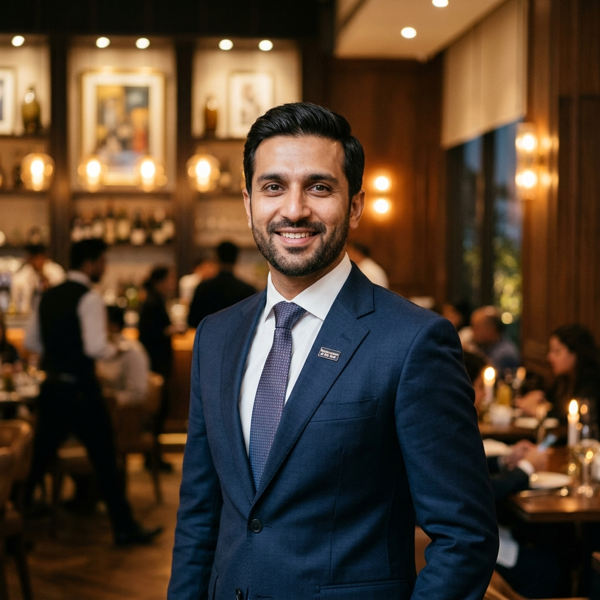

Our Identity, Our Mission
ہماری شناخت، ہمارا مقصد
Founded on December 2nd, 2020, on Lethrar Road near Taramri Chowk, Islamabad — TKR started as 'Tahir Khan Restaurant & Shanwari Foods' and was rebranded within three months to simply TKR. Today it stands as Pakistan's most recognized fine-dining export, with locations across Pakistan, the UK, and Saudi Arabia.
۲ دسمبر ۲۰۲۰ کو ترامڑی چوک، اسلام آباد کے قریب لیتھرار روڈ پر قائم کیا گیا — ٹی کے آر نے 'طاہر خان ریسٹورنٹ اینڈ شنواری فوڈز' کے طور پر آغاز کیا اور تین ماہ کے اندر اس کا نام تبدیل کر کے صرف ٹی کے آر رکھ دیا گیا۔ آج یہ پاکستان کا سب سے زیادہ تسلیم شدہ فائن ڈائننگ برانڈ ہے، جس کے مقامات پاکستان، برطانیہ اور سعودی عرب میں واقع ہیں۔
Under the guidance of founder Tahir Khan, we have taken traditional recipes from Khyber Pakhtunkhwa and presented them with luxury aesthetic presentation. We focus on culinary craftsmanship, using premium meat cuts and slow steam roasting techniques to create unforgettable tastes.
بانی طاہر خان کی رہنمائی میں، ہم نے خیبر پختونخوا کے روایتی پکوانوں کو لیا ہے اور انہیں پرتعیش انداز میں پیش کیا ہے۔ ہماری توجہ کھانا پکانے کی مہارت پر ہے، جس میں پریمیم گوشت کے ٹکڑوں اور بھاپ پر ہلکی آنچ پر پکانے کی تکنیکوں کا استعمال کیا جاتا ہے تاکہ ناقابل فراموش ذائقے تخلیق کیے جا سکیں۔

Every recipe honors generations of Pashtun and Pakistani culinary tradition without compromises.
ہر ترکیب بغیر کسی سمجھوتے کے پشتون اور پاکستانی پکوانوں کی نسل در نسل چلی آنے والی روایات کا احترام کرتی ہے۔
Following traditional Pashtunwali codes, every guest is welcomed and treated like esteemed family.
روایتی پشتون ولی ضابطوں کے مطابق، ہر مہمان کا استقبال کیا جاتا ہے اور معزز خاندان کی طرح سلوک کیا جاتا ہے۔
From farm to table, we utilize fresh herbs, pure spices, and premium organic ingredients.
کھیت سے لے کر میز تک، ہم تازہ جڑی بوٹیاں، خالص مسالحے اور پریمیم نامیاتی اجزاء استعمال کرتے ہیں۔
We support local farmers and actively engage in social welfare and charity initiatives.
ہم مقامی کسانوں کی مدد کرتے ہیں اور سماجی بہبود اور فلاحی کاموں میں بڑھ چڑھ کر حصہ لیتے ہیں۔
TKR opens its first flagship branch on Lethrar Road near Taramri Chowk, Islamabad.
ٹی کے آر نے لیتھرار روڈ، ترامڑی چوک، اسلام آباد کے قریب اپنا پہلا فلیگ شپ برانچ کھولا۔
Expanding within Pakistan, launching the premium F-6 Markaz branch in Islamabad.
پاکستان کے اندر توسیع کرتے ہوئے، اسلام آباد میں پریمیم F-6 مرکز برانچ کا آغاز۔
TKR launches its first international branch in Drighlington, Bradford, UK to massive success.
ٹی کے آر نے برطانیہ میں زبردست کامیابی حاصل کرتے ہوئے بریڈ فورڈ کے علاقے ڈرگلنگٹن میں اپنی پہلی بین الاقوامی برانچ قائم کی۔
Launching new branches in Riyadh, Saudi Arabia and Ladypool Road, Birmingham, UK.
ریاض، سعودی عرب اور لیڈی پول روڈ، برمنگھم، یوکے میں نئی شاخوں کا آغاز۔

Founder Tahir Khan has built one of Pakistan's largest food & lifestyle audiences online, with over 3.6 Million TikTok followers and 329K Instagram followers. Through high-production travel vlogging and behind-the-scenes insights, he shares the passion, stories, and cultural roots of TKR with global food lovers daily.
بانی طاہر خان نے آن لائن پاکستان کے سب سے بڑے فوڈ اور لائف اسٹائل فالوورز میں سے ایک کمیونٹی بنائی ہے، جس میں ۳.۶ ملین سے زیادہ ٹک ٹاک فالوورز اور ۳۲۹ ہزار انسٹاگرام فالوورز ہیں۔ اعلیٰ معیار کے سفری بلاگز اور پس پردہ معلومات کے ذریعے، وہ روزانہ دنیا بھر کے کھانے پینے کے شوقین افراد کے ساتھ ٹی کے آر کے جذبے، کہانیوں اور ثقافتی جڑوں کو شیئر کرتے ہیں۔